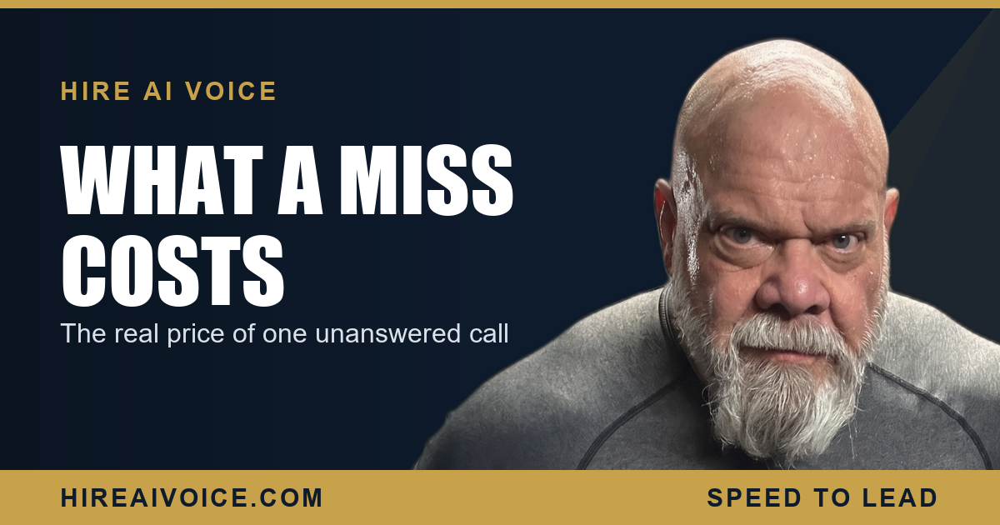

What a Single Missed Call Actually Costs Your Business

The Short Version
- A missed call is not a zero. It is a lost job with a dollar sign on it, usually worth $800 to $2,000 for a service business.
- Multiply your missed calls by your conversion rate by your average job and the annual leak is almost always six figures.
- Missed calls cost more than they look because you never see them. The customer just dials the next company and you never know.
- A 24/7 AI voice agent that answers every call runs $297 to $497 a month. One saved job pays for it many times over.
How Much Does One Missed Call Actually Cost?
One missed call costs you the value of the job you would have booked, which for most service businesses is somewhere between $800 and $2,000. That is the number people skip past. They treat a missed call like a missed text from a friend, something mildly annoying that you catch up on later. It is not. For a plumber, an HVAC company, a roofer, or a real estate agent in Santa Clarita or Los Angeles County, a ringing phone is a person with a wallet open and a problem they want solved today.
So put the real figure on it. If your average job is $1,200 and a missed call would have converted, that missed call just cost you $1,200. And that is only the front-end number. It does not count the repeat work that customer would have sent you, or the neighbor they would have referred. The true cost of a missed call is the lifetime of a customer you never got to meet.
How Do You Calculate the Annual Leak?
Multiply missed calls per week by your conversion rate by your average job value, then by 52. That one line of math turns a vague worry into a number you cannot unsee. Most owners have never run it, which is exactly why the leak keeps growing quietly in the background.
Run it with your own numbers. Say you miss 5 calls a week. Say 40 percent of those callers would have become a job. Say your average job is $1,200. That is 2 lost jobs a week, about $2,400, times 52. You just watched roughly $124,800 a year walk out the door, and most of it never showed up on a single report. Even at a conservative 3 missed calls a week, you are well past $70,000 a year in jobs you already paid marketing dollars to generate.
A missed call is not a zero. It is a lost job with a dollar sign on it.
Why Do Missed Calls Cost More Than They Look?
Because you never see the calls you miss. A bad job gets a complaint. A late invoice gets a phone call. But a missed call gets nothing. The customer does not leave you a one-star review for not answering. They simply scroll to the next name and call them instead, and you go on with your day with no idea a $1,200 job just evaporated.
That invisibility is the whole problem. You cannot manage a number you never see, and you cannot feel the pain of a job you never knew existed. So the leak runs unchecked, month after month, while you pour money into ads to generate more calls that land in the same voicemail box. It is the most expensive line item in the business, and it is the one nobody is tracking.
What Does It Cost to Never Miss a Call?
Far less than a single lost job. A 24/7 AI voice agent that answers every call runs $297 to $497 a month. Compare that to one $1,200 job. If the agent saves you even one job a month, it has already paid for itself two to four times over. If it saves you the 2 jobs a week the math above assumes, the return is not a rounding error, it is a different business.
Here is what the agent actually does. It answers every inbound call the instant it rings, 24 hours a day, whether you are under a sink, on a roof, or asleep. It greets the caller by your business name, answers their questions, qualifies what they need, and books the appointment on the spot. It can be live in 72 hours, with no contracts. The math between $297 a month and a $124,800 annual leak is not close.
What About the Calls That Still Slip Through?
Even with 24/7 answering, you want a backstop, and that is missed-call text-back. The instant any call is not answered live, the system fires a text within seconds: "Sorry we missed you, this is [your business], how can we help?" The conversation keeps going instead of dying. For a deeper look at how that one feature turns dead calls into booked work, read our breakdown of how missed-call text-back books jobs. The point is simple: a missed call should never be a dead end.
What to Do This Week
You do not need a bigger ad budget. You need to stop leaking the jobs you already paid for. Three moves:
1. Calculate your number. Missed calls per week, times conversion rate, times average job, times 52. Write it down. That is your hidden annual leak, and it is the most honest number in your business.
2. Close the gap with 24/7 answering. An AI voice agent that picks up every call and books the appointment turns missed calls into booked jobs while you keep working. This is the other half of winning the speed-to-lead race.
3. Add the text-back safety net, so no call that slips through ever goes cold.
The businesses winning in Santa Clarita and LA County are not the ones with the flashiest trucks. They are the ones whose phone never goes unanswered. Stop the leak. The number you save is yours.
Make Your Response Time Zero
Our AI voice agent answers every call 24/7, books the job, and follows up automatically. Live in 72 hours. $297/month, no contracts. Or call Sarah, our live agent, and hear it yourself.